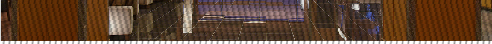
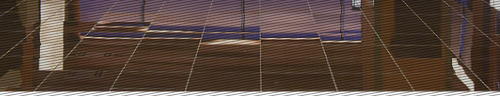
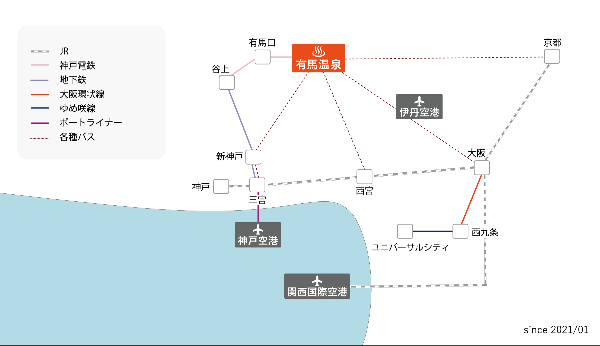
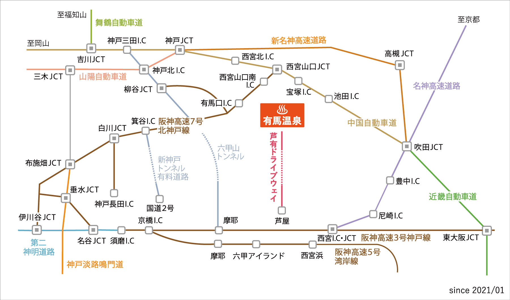

交通機関
電車でのアクセス

京都方面
有馬温泉～神戸電鉄有馬口乗り換え～神戸電鉄谷上乗り換え～JR新神戸乗り換え（新幹線）～京都
大阪方面
有馬温泉～神戸電鉄有馬口乗り換え～神戸電鉄谷上乗り換え～三宮（地下鉄）乗り換え～JR大阪
神戸/三ノ宮方面
有馬温泉～神戸電鉄有馬口乗り換え～神戸電鉄谷上乗り換え～JR神戸線三ノ宮乗り換え～JR神戸
USJ方面
有馬温泉～神戸電鉄有馬口乗り換え～神戸電鉄谷上乗り換え～JR三ノ宮乗り換え～JR大阪乗り換え～JRゆめ咲線西九条乗り換え～ユニバーサルシティ
バスでのアクセス
三ノ宮/新神戸駅
JR大阪駅
JR京都駅
バスでのご利用がございましたら、当館にて代理予約いたします。
フロントまでお申し付けください。
お車でのアクセス
